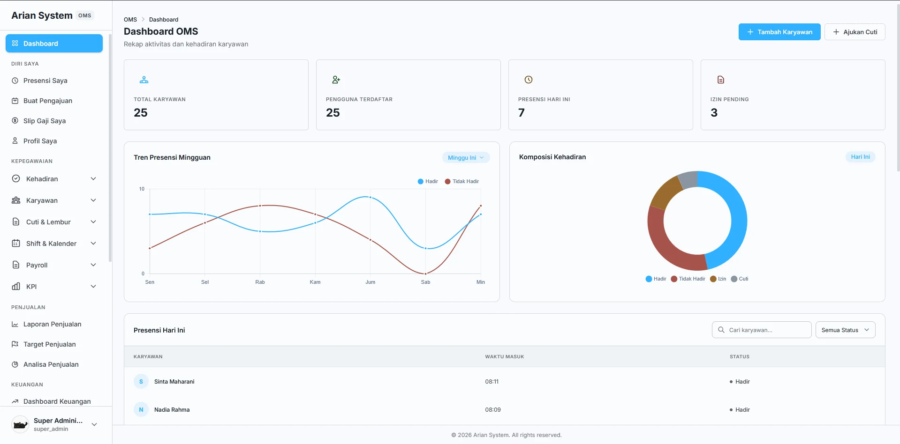
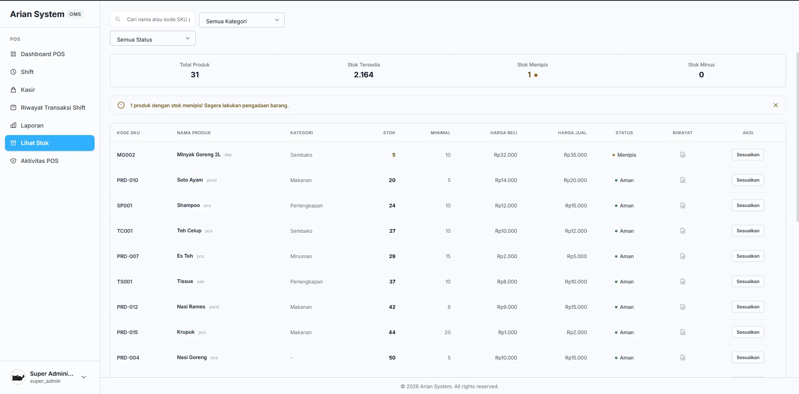
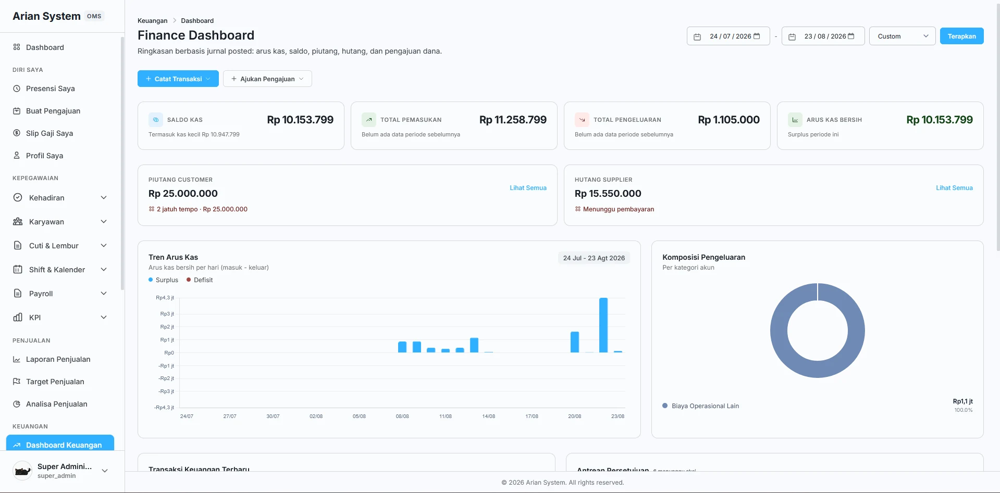
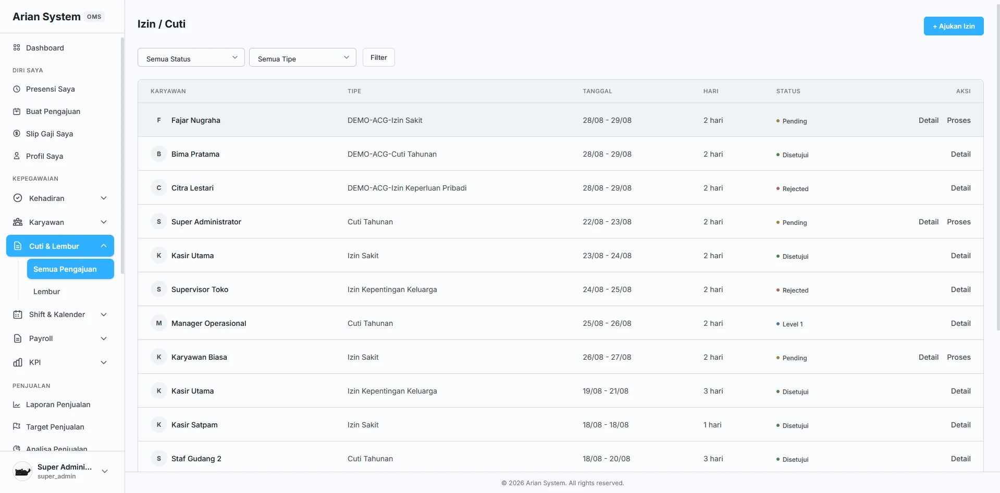
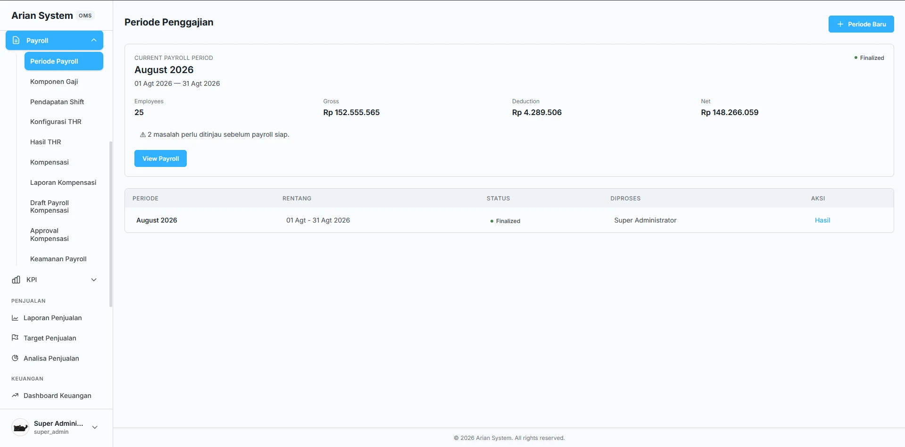
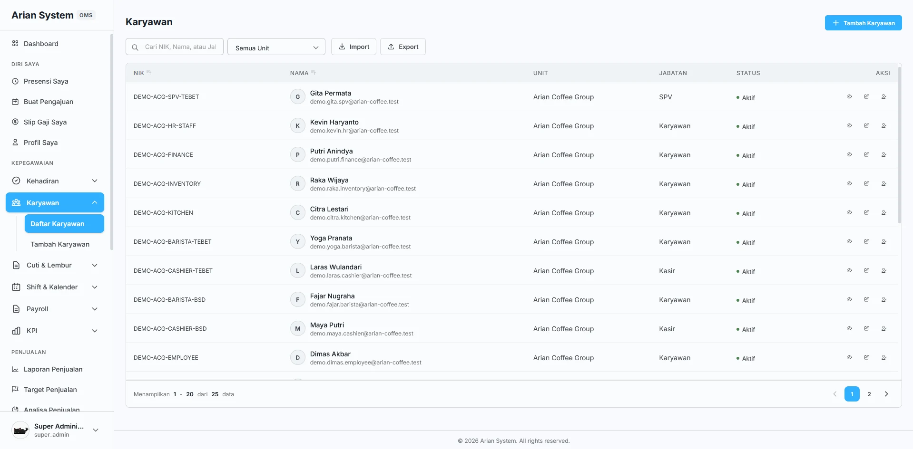

Catatan tidak tercecer.
Transaksi, perubahan stok, pengajuan, dan pekerjaan operasional berada dalam sistem yang sama.
Kelola pembelian, persediaan, keuangan, dan tim di satu tempat. Pilih penggunaan lokal dengan data di perangkat, atau online dengan data tersinkron antar lokasi.

Enam layar dari modul Arian System: ringkasan operasional, stok, keuangan, izin, penggajian, dan data tim.
Presensi, kondisi tim, dan izin pending berkumpul dalam satu ringkasan.

Status produk dan jumlah stok dapat dilihat langsung dari sistem.

Saldo, arus kas, piutang, dan hutang supplier terlihat dalam satu dashboard.

Izin dan cuti menyimpan konteks, status, serta tindakan yang tersedia.

Gross, deduction, net, dan status review terlihat untuk setiap periode.

Identitas, unit, jabatan, status, dan akses dapat diperiksa bersama.
Saat transaksi, stok, pembelian, tim, penggajian, dan keuangan dicatat di tempat berbeda, gambaran perusahaan mudah terputus. Arian System menyatukan alurnya agar lebih mudah dipantau dan ditinjau.
Transaksi, perubahan stok, pengajuan, dan pekerjaan operasional berada dalam sistem yang sama.
Stok menipis, kegiatan tertunda, persetujuan, dan laporan terlihat tanpa harus dicari satu per satu.
Peran, izin, persetujuan, PIN, dan catatan aktivitas membantu tindakan penting tetap dapat ditinjau.
Tempat pekerjaan perusahaan dikelola.
Pekerjaan harian tidak berhenti sebagai catatan. Tim melihat sinyal penting, mengambil keputusan, lalu menelusuri apa yang sudah terjadi.
Pembelian, persediaan, dan pekerjaan harian tercatat di sistem.
Stok dan status operasional ikut bergerak.
Dashboard dan laporan menampilkan hal penting.
Aktivitas penting diperiksa oleh orang yang tepat.
Keputusan dan perubahan dapat ditelusuri.
Setiap pengguna mendapat akses sesuai pekerjaan dan tanggung jawabnya.
Tindakan penting diperiksa lebih dulu sebelum diselesaikan.
Akses dapat dibatasi per lokasi sesuai kebutuhan tiap peran.
Perubahan dan keputusan sensitif dapat ditinjau kembali.
Versi web dapat dibuka lewat browser. Aplikasi Windows, Linux, dan Android sedang disiapkan; macOS dan iOS menyusul. Tombol unduh akan aktif setelah rilis resmi.
Gunakan Arian System di perangkat yang sudah mendukung browser modern.
Buka halaman masukUntuk komputer kantor setelah installer resmi tersedia.
Tombol unduh diaktifkan setelah rilis resmi tersedia.
Akan diarahkan ke Google Play setelah listing resmi tersedia.
Untuk pengguna Mac setelah aplikasi resmi tersedia.
Untuk iPhone dan iPad setelah rilis resmi tersedia.
Susun data perusahaan lebih dulu; setelah itu pekerjaan harian, pemantauan, dan keputusan mengikuti alur yang sama.
Masukkan data lokasi, karyawan, produk, dan hak akses yang akan dipakai tim.
Tim melakukan presensi, pembelian dan transaksi dicatat, stok bergerak, dan pengajuan masuk.
Ringkasan, peringatan stok, transaksi tertunda, laporan, notifikasi, dan persetujuan membantu tim menentukan prioritas.
Keputusan penting memiliki status dan pihak yang menyetujui, serta dapat ditelusuri kembali.
Mulai dari satu lokasi dengan data di perangkat, hingga beberapa cabang dengan data tersinkron.
Pembelian, stok, dan data tim tersimpan di perangkat.
Lokasi, presensi karyawan, dan laporan terhubung lewat cloud.
Akses, persetujuan, dan laporan ditinjau lintas cabang.
Bayar setiap bulan sesuai paket.
Data tersimpan di perangkat yang digunakan, tanpa sinkron otomatis. Cocok untuk memulai dari satu lokasi.
Untuk mencoba pencatatan operasional dan stok dasar.
1 lokasi · maksimal 1 perangkat
Buat akunUntuk usaha yang ingin mengelola stok dan belanja lebih rapi.
1 lokasi · maksimal 1 perangkat
Buat akunUntuk perusahaan yang mulai mengatur data pegawai dan jadwal kerja tim.
1 lokasi · maksimal 1 perangkat
Buat akunData tersinkron antar lokasi. Presensi lewat HP pegawai dan laporan gabungan ikut aktif.
Untuk perusahaan dengan beberapa lokasi yang perlu berbagi data.
2 lokasi · maksimal 3 perangkat
Buat akunUntuk perusahaan dengan banyak cabang dan kebutuhan kontrol lebih lengkap.
5 cabang · maksimal 10 perangkat
Buat akunBatas perangkat berlaku untuk seluruh perusahaan dan semua pengguna; HP pegawai untuk presensi juga dihitung. Harga tahunan dibayar sekaligus, setara 10 bulan harga bulanan.
Bicarakan kebutuhan perangkat dan perusahaan Anda dengan admin lewat chat untuk mencari pilihan paket yang sesuai.
Pertanyaan yang paling sering muncul tentang paket, perangkat, dan platform.
Rancangannya ditujukan untuk perusahaan yang pekerjaan hariannya melibatkan pembelian, persediaan, keuangan, tim, dan persetujuan — dengan satu atau beberapa lokasi.
Paket Gratis, Dasar, dan Tumbuh menyimpan data di perangkat yang digunakan. Paket Business dan Enterprise dirancang agar data tersinkron online dan bisa dibuka dari lokasi atau perangkat yang terhubung.
Ya. Semua HP, tablet, atau komputer yang digunakan untuk masuk ke sistem dihitung, siapa pun penggunanya. HP pegawai untuk presensi memakai kuota perangkat yang sama.
Pemilik atau tim masuk ke aplikasi untuk menjalankan operasional perusahaan. Data pegawai berisi informasi tentang karyawan. Pada paket tertentu, pegawai juga bisa melakukan presensi lewat HP.
Akses Web tersedia melalui halaman masuk. Aplikasi Windows, Linux, dan Android sedang disiapkan. Android akan diarahkan ke Google Play setelah tersedia. macOS dan iOS direncanakan untuk tahap berikutnya; jadwal rilis belum ditetapkan.
Pilih berdasarkan jumlah lokasi dan perangkat yang digunakan. HP pegawai untuk presensi juga memakai kuota perangkat. Untuk kebutuhan khusus, bicarakan pilihan paket dengan admin.
Ceritakan kebutuhan perusahaan, perangkat, dan tim Anda kepada admin lewat chat untuk membicarakan pilihan paket yang sesuai.
Harga tahunan dibayar sekaligus dengan total setara 10 kali harga bulanan.
Kebijakan masa tenggang, akses baca, ekspor, dan penyimpanan data akan ditetapkan sebelum langganan diluncurkan. Halaman ini tidak menjanjikan penghapusan otomatis.